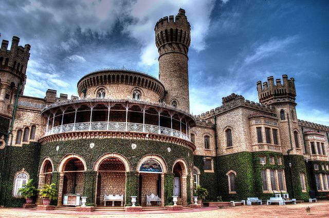
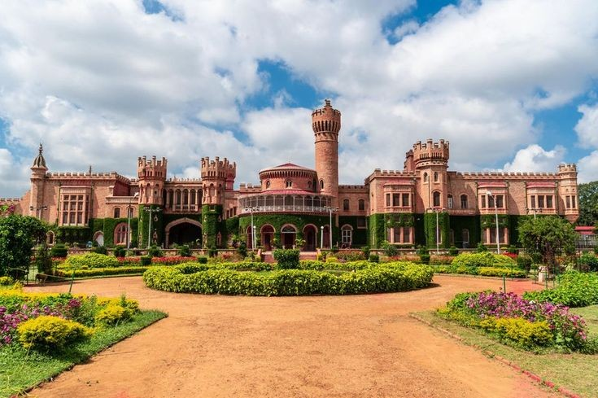

"Step into royalty and explore the grandeur of Bangalore Palace"
Bangalore Palace is a royal palace, famous for its beautiful architecture and rich history.
It is located in the heart of Bangalore city, easily accessible to visitors.
History of Bangalore Palace
Built in 1887: The palace was built by Chamaraja Wodeyar, a ruler of the Mysore Kingdom.
Inspired by Windsor Castle: The design of the palace is inspired by the famous Windsor Castle in England.
Royal Heritage: The palace has been home to the Wodeyar family and remains with their descendants today.
How To Reach
By Metro: Lalbagh metro Station (purple Line).
By Bus: Multiple BMTC routes pass by the park.
By Car: Parking available near the park entrance.
Main Attractions
Maharaja’s Room: A room that displays the lifestyle of the former rulers.
Ballroom: A large hall where royal events and celebrations took place.
Gardens: Beautiful gardens surrounding the palace where you can relax
Things to Do
Explore the Palace Interiors.
Take in the Tudor-style architecture, stained glass windows, and beautiful carvings that make the palace so unique.
Photography: Capture nature, statues, and the serene environment.
If you visit during festivals or special occasions, enjoy the palace beautifully lit up and the vibrant celebrations.
Best Time to Visit
best time to visit is during the cooler months from November to February.
it’s also nice to visit during festivals when the palace is beautifully lit.
Timings and Entry Fee
Opening Hours: Typically from 10:00 AM to 5:30 PM every day.
Entry Fee: Mention the charges, which are usually affordable, especially for children and students.
Visitor Tips
Wear comfortable shoes as there’s a lot to explore.
Take a guided tour for a deeper understanding of the palace’s history and architecture.
Don’t forget to take pictures, but check the photography rules first!